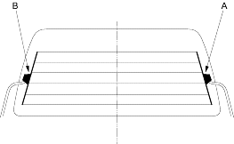
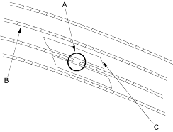
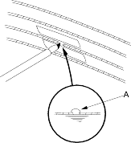

- Be careful not to scratch or damage the defogger wires with the tester probe.
- Before testing, check the No. 11 (30A) fuse in the under-hood fuse/relay box and No. 14 (10A) fuse in the under-dash fuse/relay box.
- Check for voltage between the positive terminal (A) and body ground with the ignition switch and defogger switch ON.
There should be battery voltage.
- If there is no voltage, check for:
- faulty defogger relay.
- faulty window antenna coil.
- an open in the wire between the defogger relay and positive terminal.
- faulty the defogger switch
- If there is battery voltage, go to step 2.

- Check for continuity between the negative terminal (B) and body ground.
If there is no continuity, check for:
- an open in the BLK wire.
- faulty window antenna coil.
- Poor body ground at the window antenna coil mounting bolt.
- Poor ground (G701, 5-door: G553)
- Touch the voltmeter positive probe to the halfway point of each defogger wire and the negative probe to the negative terminal.
There should be about 6 V with the ignition switch and the defogger switch ON.
- If the voltage is as specified, the defogger wire is OK.
- If the voltage is not as specified, repair the defogger wire.
- If it is more than 6 V, there is a break in the negative half of the wire.
- If it is less than 6 V, there is a break in the positive half of the wire.
- Lightly rub the area around the broken section (A) with fine steel wool, then clean it with alcohol.

- Carefully mask above and below the broken portion of the defogger wire (B) with transparent tape (C).
- Using a small brush, apply a heavy coat of silver conductive paint extending about 1/8" on both sides of the break. Allow 30 minutes to dry. Thoroughly mix the paint before use.

- Check for continuity in the repaired wire.
- Apply a second coat of paint in the same way. Let it dry 3 hours before removing the tape.